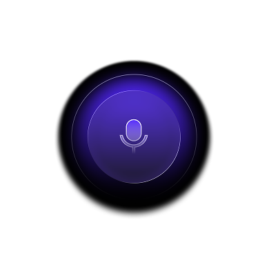

Voice Reactive Record
Idle animation. Click microphone to connect real voice frequency.
Energyoverall voice level
Low70–250 Hz
Mid250–1600 Hz
High1600–5200 Hz

Idle animation. Click microphone to connect real voice frequency.